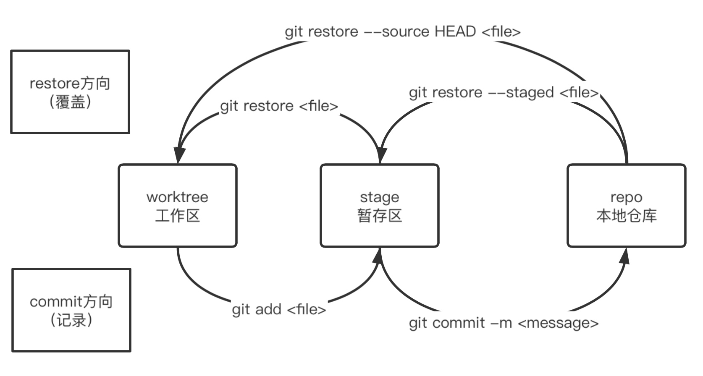

Git 讲座¶
v1.0210523 更新视频教程
为什么要用Git¶
〇 版本控制
比如，你晚上写一篇论文，写好了存起来。结果第二天早上起来，你再拿出来一看，害，写的什么啊。早上修改了一大堆，改完了存起来。结果下午一想，害，早上我改什么啊！昨晚那个写的不是挺好的吗…但这时，你已经没有昨晚存的那一份文稿了，只能凭着记忆把论文再改回昨晚写完之后的样子……
这时，你想：如果有一个工具，把我每次修改的内容都记录下来，那么我每次想反悔的时候，这个工具能帮我把文稿恢复到原来的样子就好了！
〇 合作开发
比如，你写一篇论文，写好了存起来，同时发给了你的实验室同伴和导师。你的同伴看到你有几个单词写错了，帮你改了又发回来；你的导师觉得你有段内容写的逻辑不太清，帮你简单改写了一下又发了回来。在等待两人回复的时间，你又发现论文的参考文献少添加了几个，花了点时间把它们加上。过了一会，你收到了同伴和导师改的两份文件，然后你打开你改好的论文，把你同伴改正的单词挑出来放进去，把你的导师改的那一段复制粘贴过去…
这时，你想：要是有个工具，能帮我把大家所做的更改方便的合并在一起就好了！
Git就是这样的一个工具，只不过，我们一般不同它来管理论文，我们会用Git来管理项目。什么是项目，软件开发的一堆代码文件合在一起算一个项目，一本大家一起来写教程书算是一个项目……我们用Git来对这些项目进行管理、结合代码托管平台（比如GitHub），大家一起合作开发，修改代码或文章。
Git准备¶
要学习Git，因为Git本身就是命令行程序，所以首先是要对终端、Shell、命令行有一些认识和理解。但因为大家之后可能在开发中不会很用到终端这一块，所以这里只会简单讲一些浅显的部分。对于之后要进行网络应用开发的同学，之后应该还会有关于服务器、Linux命令行等的讲解。
认识Mac的文件系统¶
文件是什么呢？就是存储在硬盘里面的一些东西。我们怎么在Finder里面看到更清楚的看到这些文件呢？我们需要对Finder进行一些设置
对访达进行设置¶
Advanced打开Show all filename extensions
Sidebar打开Hard disks从而看到挂载的磁盘，打开你的家目录（一个房子的图标，我的是yangxijie）从而看到家目录
继续调整访达¶
在菜单栏的View里面调整：
⌘2：按照列表查看
⌥⌘S：打开边栏
⌥⌘T：打开工具栏
⌥⌘P：打开显示路径
⌘/：打开状态栏
观察根目录/初识目录¶
什么是根目录？所有的文件和文件夹都存在根目录下。这里根目录就是你的内置硬盘Macintosh HD
Applications：你安装的应用程序都在这个文件夹
Library：用来存应用程序的一些数据。比如微信的聊天记录就在这个里面哦
System：一些系统（macOS）的文件，没事儿别乱碰就好了
User：个人的文件就在这里。其中/User/yangxijie（或者你的用户名）是你的家目录，也可以直接在边栏点击打开。
观察树状结构¶
通过展开、折叠列表了解文件夹间的层级关系
文件夹路径¶
观察下方的路径栏，尝试写出当前的路径；知道每个文件夹都有一个路径。
其中：根目录/ == Macintosh HD，家目录~ == /Users/yangxijie（你的用户名）
（之后在终端输入带有空格的路径时记得加上双引号…）
查看文件属性中的路径¶
⌘I查看文件属性，尝试写出文件的路径
尝试在某个文件夹中写出文件的相对路径：.当前文件夹，..上一级文件夹，...上上级文件夹
隐藏文件¶
⇧⌘. ：显示隐藏文件
.开头的文件夹和文件会被隐藏，一些不以.开头的文件或文件夹也会被隐藏。这是因为有些文件可能比较繁琐或者对用户来说完全没有用处，或者普通用户对其进行操作比较危险，所以创建这个文件/文件夹的时候就带上了.、或者直接由系统将其隐藏将其隐藏不让一般用户看到。
文件名后缀的说明¶
文件名后缀不过是文件名的一部分，文件名后缀只是为了告诉系统该程序默认由哪个应用程序来打开（txt 文本编辑，jpg 预览，mp4 QuickTime Player），一般后缀能标志一个文件的类型
常见纯文本文件的后缀为：无后缀（如一些配置文件~/.zshrc），文本文件<filename>.txt（一般也会省略.txt变为无后缀），markdown风格文件<filename>.md……
认识终端、Shell、命令行¶
软件按照使用方式来分可以分成有UI（User Interface，用户界面）的图形界面程序，还有没有UI的命令行程序。从使用的角度来说，，图形界面应用方便实用，那么为什么一些程序使用命令行呢？因为命令行简洁，开发起来容易，功能多样，和系统的联系较近。
我们今天要学习的Git，就是没有UI的命令行程序。命令行程序需要借用终端和Shell来使用，我们下面会先讲一下终端和Shell。
终端和Shell¶
终端，就是Mac上的Terminal.app，或者一些别的终端软件，比如我在用的iTerm 2.app。打开终端之后，我们进入的就是Shell，Shell的作用是将你输入的命令解释并执行。（演示在iTerm 2.app终端中⌘D开两个Shell）
| Text Only | |
|---|---|
1 2 | |
使用：
| Text Only | |
|---|---|
1 2 | |
查看Shell是如何解析这条命令的。也就是说，打开终端，在Shell里面输入命令date，Shell会将其解析为/bin/date，也就是根目录下bin/文件夹下的date程序，并且调用这个程序；这个date程序的功能就是输出当前的时间。
Shell的工作路径¶
查看命令前面，会有代表当前路径的地方。这说明，每条命令其实都是在某个文件夹下执行的。比如我们执行mkdir命令创建一个新的文件夹，mkdir会帮助我们在当前目录下创建一个文件夹，名字为new_folder。
| Bash | |
|---|---|
1 | |
使用pwd命令可以查看当前的路径。使用cd命令可以更改当前的路径。
常用命令¶
命令后面会加一些参数，比如在mkdir后面加要创建的文件夹的名字；命令后面也会加一些选项，比如--help -a这些。
| Bash | |
|---|---|
1 2 3 4 5 6 7 8 9 10 11 12 13 14 15 16 17 18 19 | |
| Bash | |
|---|---|
1 2 | |
| Bash | |
|---|---|
1 2 | |
经过观察，我们发现Shell是用空格区分每个单词的。所以我们在之后新建与开发有关的文件夹/文件的时候不允许使用带有空格的名字，尽量在名字中只使用a-z``A-Z``0-9这62个字符（当然中文名也可以，但是不推荐）。但有时有的文件就是有空格，这时需要在名字两侧添加双引号，或者在空格前面添加反斜杠\。
OK 如果只是学Git，这些绝对够了。如果是要使用终端进行开发工作，这些说实话不怎么够。但我们学这些足够了。
Git教程¶
安装/配置Git¶
macOS自带Git（也许），我们可以直接使用（什么叫自带呢…相当于Finder、备忘录、日历这些预装软件）。使用下方命令查看Git的版本。
| Text Only | |
|---|---|
1 2 | |
如果无法出现版本号，说明你需要安装Xcode或者Command Line Tools，安装的时候会顺带安装Git。推荐之后打算学习iOS软件开发的同学直接从App Store安装Xcode；Mac存储较小的同学或者之后不打算用Xcode的话在Apple Developer下载Command Line Tools安装就好。如果希望使用更新版本的Git，需要使用Homebrew进行安装，这里不多说，因为自带的版本版本已经足够了。
添加Git用户名和邮箱¶
| Bash | |
|---|---|
1 2 3 4 5 6 7 | |
由于Git会记录你的每一次操作，这些记录里面需要有操作者的信息，你在你的电脑上用，所以需要给你电脑上的Git配置你的名字和email。这里名字就用全名是比较好的，比如Xijie Yang这样，也可以用简写，比如yxj（并不规范）。这里添加名字和邮箱是方便以后别人看了你写的代码能够找到你…需要写真实的名字和邮箱
Git基础¶
创建版本库¶
在某个文件夹下执行：
| Text Only | |
|---|---|
1 2 | |
该文件夹下会多出来一个.git/的文件夹，这个文件夹就是Git生成的，存储用来管理这个文件夹内文件的信息。我们在之后是不应该对这个文件夹内的东西做任何更改的。（复习：想要在Finder看到点开头的文件或文件夹，使用快捷键 ⇧⌘.）
工作区、暂存区、本地版本库¶
概述¶
在你执行git init的文件夹（存在.git/文件夹）中：
工作区（Working Directory）：你在Finder/Xcode/VS Code的侧边栏文件管理器看到的所有文件。这些文件你可以任意修改，或者说，你修改的总是工作区的文件。
暂存区（Stage）：通过git add命令将文件添加到暂存区。可以多次使用git add命令来记录添加或修改的文件内容。
本地仓库（Repository）：通过git commit命令将暂存区的所有添加/修改放入本地仓库/本地版本库。一般来说，当一些比较大的修改完成，我们会使用git commit命令完整记录这次修改，每次commit被称作一个版本，因此将存储这些commit的仓库叫做版本库。以后可以通过git log命令快速查看这些commits或进行版本回退。
也就是说，你每次使用git commit，Git就会帮助你记录这次做的更改，这样你以后想后悔的时候通过commit回退就可以了。就好像打闯关游戏的时候会存档，每次存档之后，如果你打Boss挂了，没事儿，从存档点重来就可以了。
git add¶
| Bash | |
|---|---|
1 | |
可以添加文件，也可以添加文件夹。也可以按照通配符来添加。
git commit¶
讨论：我到底应该什么时候commit？commit最重要的作用是，之后你可以通过某次commit版本号查看或者回到这次commit。一般来说，当你觉得改了一些东西的时候，都可以commit一下。也有不少人觉得应该每改一个文件add一次commit一次。都可以，这个看个人习惯。但是注意不要改了好多才commit，因为这样更改的记录就不是那么清晰了。
| Bash | |
|---|---|
1 2 3 | |
一般<message>使用动词加名词的形式，记录你这次commit修改的主要内容。使用英文或中文都可以，个人推荐使用英文，因为如果你之后开源，英文可以让你方便的将你的项目推向世界。
一般来说，一次commit之后，这次commit就不应该被改变了；类似你这次做的修改已经写入历史书的感觉。但是你commit之后突然发现刚刚的commit实在不行，这时怎么办呢？使用：
| Bash | |
|---|---|
1 | |
来修补上一次commit。这样之前的一次commit就会变成你新提交的commit。
git status¶
查看每个区的状态。
git diff¶
| Bash | |
|---|---|
1 2 3 4 | |
更好的是，直接在VS Code或Xcode中查看（左侧的颜色条），这样更方便。或者采用一些插件查看，比如VS Code的插件git graph
这里可以看到Git判断文件修改是按照行来判断的。你改了一个单词，Git只会记录：这一行被更改，原来为xx，改为了xx；你添加了一段代码，Git只会记录：添加了xx行，内容为xx。
所以：
* Git一般只能管理文本文件，而且是按照行管理的
* 二进制文件也可以通过git add让Git来管理，但二进制文件被更改的话，Git只知道文件更改了，无法记录是怎么更改的；而且如果一直使用Git管理二进制文件，.git/文件夹会越来越大，这不利于网络传输。
* 像Microsoft Word的.docx文件就是二进制文件，一般不会用Git来管理。（除了Git还有很多别的版本管理工具/软件哦，大家感兴趣可以自行了解）
git log¶
（多次commit之后查看）
| Bash | |
|---|---|
1 | |
log——日志
看到了最开始设置的邮箱和名字，也就是说，谁提交的commit，在log里面是都能看得到的哦。
看到了每次commit都有一串编号，这个编号是根据每次一次commit的文件计算出来的，我们将其称为版本号。之后如果要查看某一次commit，可以通过这些版本号查看（但比较长，写前几位就可以了）
也看到了每次commit附加的message，这样就能知道每次commit都做了什么。
git rm¶
直接删除文件（⌘⌫或rm命令）——只删除了工作区的文件。这时你使用git commit命令提交这一更改，发现你刚刚的更改（删除）Changes not staged for commit。还记得讲git commit的时候，说要把东西添加到暂存区才能提交吗？
所以我们使用git add <file>命令，将删除的文件添加到暂存区
相当于：如果你需要在工作区（在文件管理器）删除一个文件，而且还要让git不再跟踪记录这个文件，那么需要先在文件管理器中删除，之后再使用git add命令添加这个文件。
这两步合成一步，就是git rm <file>。还是推荐大家使用上面的命令，因为我们在之后实际开发的时候，可能一次commit会对很多文件作出修改，这其中包括新建一些文件、删除一些文件，因此直接git add .就好了，不需要考虑这么多；如果文件是删除了的，那么git add .就会将这个文件识别为被删除的文件。
如果你要将用git add放到暂存区的文件取消暂存，使用git rm --cached <file>命令
如果你想改变工作区的文件，或者让暂存区的文件变成
案例：关于上面所有命令的案例¶
git init/add/status/diff/commit/status/add/commit/log/diff
舍弃工作区/暂存区的修改¶
舍弃更改==用某些之前的东西来覆盖
| Bash | |
|---|---|
1 | |
git restore == git restore --worktree 默认是覆盖worktree
| Text Only | |
|---|---|
1 2 3 4 5 | |

案例：关于git restore¶
版本回退¶
首先我们需要明确两点：每一次commit的编号，一方面代表所有文件的状态，另一方面代表这一次commit相比于上一次commit所做的更改。
那么我们如果希望回到之前的某个commit，指的就是直接将工作区所有文件都恢复成那个commit之后的样子。
这时我们需要使用：
| Bash | |
|---|---|
1 | |
如果我们希望撤销某次commit所做出的更改，那么我们需要使用：
| Bash | |
|---|---|
1 2 | |

两种回退的分析：
git reset --hard是非常方便的回退方式。如果你写代码提交了两个commit之后去吃饭，吃完回来一看，觉得刚刚状态不太好写的不行，于是你git reset --hard回到两个版本之前，发现所有的东西都变成了你修改代码前的样子。
git reset --hard会删除commit，所以如果你在某次commit中添加了敏感信息（如账号密码等），那么使用git reset --hard进行恢复是十分明智的选择。
但是要注意，在上面的案例中，如果你已经将两次commit使用git push上传到了Git服务器，那么git reset --hard一定会给团队协作带来混乱（因为你直接删除了两个commit！）。这时怎么办呢？你可以使用两次git revert -n再git commit，这样你会新生成一个commit，这个commit的内容和往前两次commit的内容一样，由于这是新生成的commit，所以push到服务器也完全没有问题。
那么如果把密码git push到服务器了呢？这时Git已经帮不了你了。要不直接在代码托管平台直接删掉项目吧（不推荐），要不就赶紧去改密码吧…
注：其中的版本号<commit>可以通过git log查看。
注：向后回退一个版本可以写为git reset --hard HEAD^，HEAD^^表示当前版本向后2个commit，HEAD~n表示当前版本向后n个commit。
Git进阶 - gitignore¶
我们因为之后要进行合作开发，或者你想把你的Git仓库分享至网络，我们都需要上传.git/文件夹。这样的话，我们就不希望这个文件夹太大，不然别人下载起来很慢；我们也不希望一些私密的文件上传上去，比如含有某些密码的文件；以及一些乱七八糟的文件，我们也不想让别人看到。因此，在git add和git commit的时候，我们就要注意不要把一些很大的图片、视频、第三方包等大文件，还有一些密码、个人配置文件添加进Git仓库。
我们可以在每次git add的时候都注意不去添加这些文件，但是刚刚说到，最常用的添加文件的方式是git add .，那么如何告诉Git我们不希望添加的那些文件，让Git自动帮我们排除添加这些文件呢？
通过在项目的文件夹中创建一个.gitignore文件，在其中写出你不希望Git追踪的文件和文件夹，之后在使用git add命令时，Git就不会添加这些文件和文件夹进暂存区。
我们在开始某种项目的时候，会先在GitHub的.gitignore模板找一份.gitignore，再在其中添加自己不需要Git追踪的文件。比如要开始Swift项目的开发，我们会先下载Swift的.gitignore模板https://github.com/github/gitignore/blob/master/Swift.gitignore，再在其中添加比如一些自己用来测试的文件夹、存放密码的文件等。
使用*可以代替文件的一部分名称。比如使用*.log让Git不要添加所有的日志文件。
给.gitignore添加注释，使用#即可。
通过在最前面添加!可以讲已经忽略的文件再添加回来。比如前面写了*.txt忽略了所有你希望Git忽略的txt文件，但是里面有一份IMPORTANT.txt你希望添加，那么可以在.gitignore后面添加!IMPORTANT.txt。还有一点要注意，如果你之前忽略了一整个文件夹，那么之后是不能再用!添加这个文件夹里面的文件的。可以参考一下下面的文档：
An optional prefix "!" which negates the pattern; any matching file excluded by a previous pattern will become included again. It is not possible to re-include a file if a parent directory of that file is excluded. Git doesn’t list excluded directories for performance reasons, so any patterns on contained files have no effect, no matter where they are defined.
在开始写项目代码之前就创建好.gitignore并添加到Git中是一个好的习惯。
Git进阶 - 分支¶
分支¶
创建一个分支，你可以在这个分支上开发新功能A，过一段时间，你又想开发新功能B，这时你可以再开一个分支。过了一段时间，你两个新功能都开发好了，就可以将两个分支合在一起，这样你的产品就同时有了两个新的功能。
分支操作¶
| Bash | |
|---|---|
1 2 3 | |
| Bash | |
|---|---|
1 2 3 4 | |
解决冲突¶
合并的时候可能会产生冲突。这时我们需要自己去解决冲突。比如你和同学一块写UI组件，各自开了一份文件来写，结果你俩把文件名起成了一样的，或者在同一份文件中修改了相同的地方，这时在第一个同学合并之后，第二个同学的合并就会出现冲突。解决冲突的方式很简单，在被Git用箭头标出来的地方进行删改就好了。
分支案例¶
注：设置默认分支为main¶
Stack Overflow | How can I create a Git repository with the default branch name other than master?
| Bash | |
|---|---|
1 2 3 4 5 6 7 8 9 | |
| Bash | |
|---|---|
1 | |
Git进阶 - 远程仓库¶
连接远程仓库¶
远程仓库，就是一个Git服务器。它可以存放你的代码，然后多台电脑一起链接到这个Git服务器，大家就可以开始协作了。如果一个平台有很多的远程仓库，我们一般将其称作代码托管平台。世界知名度最高的代码托管平台是GitHub，大家都在用，我们之后也会用GitHub进行演示，以后大家也许也会使用GitHub进行合作开发。其实还有很多的代码托管平台，比如gitee（码云），GitLab（企业可以自行使用部署，如
连接这些代码托管平台，你得首先有一个账号，直接注册就好了。如果用的是THU的GitLab，用清华邮箱就可以登陆。
我们之后会用这个账号去将本地的代码推上云端，会将云端的代码下载到本地。但是如果我们每次登陆都要输入密码，这是一件很费力的事情。所以我们需要配置ssh。
简单来说，ssh就是你可以不用输入密码，而是通过一串钥匙码（字符串）来登陆；登陆的时候发过去这段钥匙码，如果服务器一看匹配，那么就让你登陆，这样子。
在GitHub中点击个人头像，Settings，在Account settings中找到SSH keys，点击New SSH key；Title可以随便起，比如把你现在登陆的电脑型号写上去；在下方Key这里填入SSH 公钥
查看SSH 公钥：cat ~/.ssh/id_rsa.pub
如果没有需要先使用命令ssh-keygen -o生成
（具体大家可以参考Git文档）
再点击Add SHH key，之后本地和远程仓库之间连接就不需要输入账密了。
将本地仓库上传到代码托管平台¶
一般来说，一个项目的远程仓库只有一个分支main。你开发新功能的时候会在本地新开一个分支new_feature，开发好了之后将这个分支merge到本地的main分支。如果要上传，则是将本地的main分支上传到远程仓库的main分支。
假设我们现在本地已经有了一个Git仓库，我们现在希望将它上传到GitHub上，让别人也看到我这个仓库里面的文件：
打开GitHub，创建一个新的仓库（Repository），什么都不添加，之后会弹出下面的一段话：
| Bash | |
|---|---|
1 2 3 4 5 6 7 | |
我们按照提示来做，会发现代码已经上传了上去。
如果我们再在本地修改，提交，（由于我们已经设置了上游的分支）之后就可以使用git push将修改的内容同步到GitHub了！
注：
We recommend every repository include a README, LICENSE, and .gitignore. —— GitHub
其中README.md告诉别人怎么用你写的这个软件，怎么合作开发，使用需要注意什么；LICENSE里面写开源的协议，我们后面会说到；.gitignore我们前面讲过，别把一些乱七八糟的文件或者敏感信息
和他人合作开发一个项目¶
如果是一个大型软件，几十个代码文件，一个人写肯定不现实，这时就需要大家来合作开发。
有仓库的读写权限¶
一般来说，如果是一个小团队的项目，每个人都有仓库的读写权的话，我们合作开发的步骤基本和上面自己上传代码到仓库是一样的。
需要注意的是，在我们开发一个功能的时候，他人可能已经写了一些代码commit然后push到了远程仓库。这时我们一般需要将他人的代码merge到自己目前的分支上，保持自己的代码最新，减少之后自己开发完毕push到远端仓库出现冲突的情况，也减少重复开发的情况。
具体做法 首先确保你的分支已经关联了远程仓库的分支，之后使用
| Bash | |
|---|---|
1 2 | |
为开源项目添砖加瓦/没有仓库的读写权限¶
有的项目，会有一些核心的人有着仓库的控制权限；其他人则需要通过这些核心的人的审核，才能对项目作出修改。一般我们将这些有着仓库控制权限的开发者叫做项目维护者（Maintainer），将参与项目开发但是没有直接操控权限的开发者叫做项目贡献者（Contributor）。上面所说的直接push可以作为Maintainer提交代码的一种方式。但如果是Contributor该如何提交代码呢？
Git使用实例：<team-repo-nickname>开发
说明：团队仓库名为<team-repo-nickname>，个人仓库名为<my-repo-nickname>
1 将远程仓库下载、链接到本地¶
〇 1.1 克隆原仓库到本地
| Bash | |
|---|---|
1 | |
--origin <远程仓库名>用来给默认的名字origin重命名
--origin:-o
<project-folder>指本地新出现的文件夹的名称
〇 1.2 fork仓库使得自己有push的权限
在GitHub上操作，得到自己fork后的仓库链接<my-repo-url>
〇 1.3 进入clone后的文件夹
| Bash | |
|---|---|
1 | |
〇 1.4 添加自己的远程仓库
| Bash | |
|---|---|
1 | |
add后紧跟的是远程仓库的名字，可以自定义
〇 1.5 查看关联的远程仓库
| Bash | |
|---|---|
1 2 | |
--verbose:-v
2 开始开发自己的功能¶
注：一般团队的远程仓库只有一个main分支
〇 2.1 先拉取最新内容
| Bash | |
|---|---|
1 | |
〇 2.2 将最新的内容merge到自己的main分支
| Bash | |
|---|---|
1 2 | |
这里应该不会遇到冲突，因为本地不会在main分支进行开发，除非你修改文件的时候忘记切换到新的分支
〇 2.3 switch到新的分支
| Bash | |
|---|---|
1 | |
〇 2.4 开始自己修改代码
〇 2.4.1 拉取最新的代码 如果你在切换分支之后一直把添加新功能这件事情扔在一边儿，那 么你在开始修改代码之前最好再拉取一下最新的代码进行合并：
| Bash | |
|---|---|
1 2 | |
〇 2.4.2 修改 比如增加文件、删除文件，增加代码、删除代码等
〇 2.4.3 提交
| Bash | |
|---|---|
1 2 | |
〇 2.4.4 拉取最新代码查看是否有冲突
在上一次commit之后，再次修改代码之前，你需要拉取最新的代码；这时可能会遇到冲突，因为你在本地修改的时候别人可能已经在远端仓库提交了PR并且被管理者merge到新的代码中。遇到冲突需要自己解决
| Bash | |
|---|---|
1 2 | |
在解决冲突后再次commit；如果无冲突则没有必要commit
| Bash | |
|---|---|
1 2 | |
〇 再次修改
重复上述修改，提交，拉取最新代码的过程
3 push到远端和提PR¶
〇 3.1 push到自己的远端仓库
| Bash | |
|---|---|
1 | |
这里的语法是：git push <远程主机> <本地分支>:<远程分支>
含义：将某一本地分支推到远程主机的远程分支；如果远程仓库没有这一分支，则创建
也可以写作：
| Bash | |
|---|---|
1 | |
这里的语法是：git push <远程主机> <远程分支>
含义：将本地的当前分支推到远程主机的远程分支；如果远程仓库没有这一分支，则创建
〇 3.2 提PR（Pull Request）
登陆GitHub，在你的仓库可以拿着刚刚推到远程的newFeature分支向团队仓库提一个PR
〇 3.3 等待开发者merge
如果PR被拒绝，你可以继续更改代码、commit、push、提PR直到开发者觉得你的代码可以merge；也可以直接弃坑lol
4 开发者merge之后删除newFeature分支¶
〇 4.1 删除远程分支
〇 方法一
在团队仓库的PR界面，如果成功merge，那么你可以看到一个delete branch的按钮，可以直接点击按钮删除自己fork的仓库中的newFeature分支
〇 方法二
| Bash | |
|---|---|
1 | |
〇 方法三
| Bash | |
|---|---|
1 | |
这里的语法是：git push <远程主机> :<远程分支>（注意和push到远端仓库做区分）
〇 4.2 删除本地分支
| Bash | |
|---|---|
1 | |
确认删除可以使用：
| Bash | |
|---|---|
1 | |
〇 4.3 可能遇到的问题
使用git fetch --all将所有远端仓库（<team-repo-nickname>和<my-repo-nickname>）的最新“状况”拉取到本地
这时使用命令git branch -a查看所有分支，发现远端<my-repo-nickname>的newFeature分支并没有删除
这说明不能通过git fetch命令获取到分支删除的更新
使用git remote -v show yxj查看分支状况，发现newFeature分支是陈旧的（stale）
使用git remote prune yxj删掉本地陈旧的远端分支（就是远端已经删除掉了但是本地还没删除掉的分支）
或者拉取信息的时候使用：
| Bash | |
|---|---|
1 | |
详情可以查看：CSDN | Git远程分支的删除与同步
使用private仓库进行合作开发¶
与参与开源项目是类似的。
如果直接在private项目中添加他人的access权限（添加collaborator），相当于添加maintainer，maintainer可以直接push仓库；不过也可以fork之后提PR。注意，没有仓库的access权限应该是不能fork的！
Git进阶 - 标签管理¶
为什么要添加标签¶
发布一个版本时，我们通常先在版本库中打一个标签（tag），这样，就唯一确定了打标签时刻的版本。将来无论什么时候，取某个标签的版本，就是把那个打标签的时刻的历史版本取出来。所以，标签也是版本库的一个快照。
Git有commit，为什么还要引入tag？
“请把上周一的那个版本打包发布，commit号是6a5819e...”
如果换一个办法：
“请把上周一的那个版本打包发布，版本号是v1.2”
“好的，按照tag v1.2查找commit就行！”
所以，tag就是一个让人容易记住的有意义的名字，它跟某个commit绑在一起。
在本地的commit上添加标签¶
| Bash | |
|---|---|
1 | |
将标签上传至代码托管平台¶
| Bash | |
|---|---|
1 | |
Git进阶 - 命令简写¶
gitconfig¶
cat ~/.gitconfig
用vim编辑器打开vim ~/.gitconfig或open ~/.gitignore使用默认应用打开
添加
| Text Only | |
|---|---|
1 2 | |
之后使用命令git lg就可以代替上面这一长串的命令啦！你也可以设置c=commit，这样你以后用git c
zshrc¶
如果你还是觉得上面的命令不够简化，你还可以这样，直接让Shell解析你简化的命令：
cat ~/.zshrc（macOS版本需在10.15 Catalina及以上；什么，还没升级？快去升啊 笑）这是zsh的配置文件。
vim ~/.zshrc或open ~/.zshrc
添加
| Text Only | |
|---|---|
1 2 3 4 5 6 | |
然后我们使用命令source ~/.zshrc让这个配置文件生效。
之后我们就可以用ga .来添加所有文件，用gc "update xxx"来提交，用glg查看简要的提交历史……你也可以添加更多的简写
如何使用GitHub上的代码¶
说说开源¶
什么是开源¶
开源就是把自己写的软件的源码公开，比如上传到GitHub并且设置仓库为public (instead of private)
开源者¶
- 从开源者的角度，你的代码被别的优秀开发者看到，他们能帮你提出很多代码上的建议，会帮你一起开发软件，加速软件开发速度；
- 从其他开发者的角度，你可以看到很多优秀的开源代码仓库，从而有了学习的内容；
- 整体来说，开源加快了某种社区的发展，加快了软件的开发进程，加强了程序员之间的交流…
当然也会有一些弊端，比如开源者可能很难从开源中获得资金的支持…不过也许能获得好的名声，嗯，只是也许
开源协议¶
有很多种开源协议。在GitHub上使用最多的是MIT协议。简单来说，开源协议告诉看开源代码的人该如何使用这份开源的代码。一般来说，开源者应该在代码中提供开源协议。你可以用现成的协议，也可以自己写。想了解更多可以查看：从MIT协议谈契约精神（如果之后打算开源自己的代码的话一定要仔细查看哦）
GitHub简介¶
GitHub是一个代码托管平台和世界最大的程序员交流社区。你可以将自己团队的项目放上去，然后大家一起push一起提pr（Pull Request）合作开发，这时你使用的是GitHub的代码托管功能，如果你不希望开源项目，你应该把repo（Repository）的属性设置为private；你也可以自己一个人开发，然后把代码放上去让更多的人看到（设置repo属性为public），如果有人跟你互动（比如在Issues模块反馈了几个bug，在Discussion模块和你简单交流），那么你就使用了GitHub的代码托管功能和交流社区的功能。
有的时候，我们也会去GitHub搜索一些开源项目来借鉴学习。
如何查看GitHub代码仓库/使用别人写的代码¶
你可以在GitHub上搜索你感兴趣的项目
点开某个repo查看README.md，一般来说README.md都会将项目描述的很清楚
想借鉴代码：
- 如果只有几个文件的话可以直接复制粘贴
- 直接
git clone查看所有的代码 - 下载代码文件（可能不带
.git文件夹）
想使用程序：
- 下载可执行文件/安装包
git clone后自己进行编译/build
想为这个开源项目贡献自己的力量：
- 使用程序，在Issues模块提出自己发现的bug
git clone后自己对程序作出一些修改，对项目提出pr
记得查看Licence，在许可证允许的范围内使用源代码。
References¶
- Git Official Site
- 廖雪峰｜Git教程
- ✡ RECOMMENDED ✡
- 非常通俗易懂的文字版Git教程，推荐多次翻阅
- Bilibili｜电子系科协2020年暑培 p1 Git
- 可视化学习Git
- 对Git中的高端操作不理解可以去试试可视动画
- 初学阶段也可以通过闯关来加深对git的理解
- Git docs｜快速查阅git操作
- GitHub｜git-flight-rules
- ✡ RECOMMENDED ✡
- 如果你在使用git的过程中遇到了棘手的问题应该都可以在这里找到解决方法
- 一个挺详细的 Git 中文手册
- Git Pro｜进阶git的一本厚书
- 一般没有必要看
补充内容¶
关于我讲的内容¶
我讲的内容是做了删减的，并没有讲到Git的全部命令。我把核心放到开发常用的一些命令上，希望大家知道Git怎么真正辅助我们的开发。
什么是梯子¶
什么是服务器——就是一台电脑
网络如何访问（骨干网，路由器）
概括的来说，能让你上网速度加快，能让你访问原本访问不了的网站的工具，就叫梯子/VPN/加速器…
使用THU GitLab¶
注意无法和校外的同学一起使用
图形化Git¶
有很多图形化的Git软件，我用过都觉得很难用…所以也没什么发言权，大家觉得命令行不好用也可以自己去探索一下
在Xcode中使用Git，可以使用自带的一些功能（在菜单栏Source Control里面），但是我个人推荐使用终端命令行进行版本控制。注意打开终端之后需要先cd到项目的文件夹再使用Git。
终端进阶¶
echo hello world >> haha
history | grep git
终端脚本的编写：需要掌握，在Xcode里面可能就要写的。但不是刚需。也很简单，用到的时候再简单学一下就好了
GitHub CI¶
查看THU-iOS tutorial repo中.github/workflows中的yaml文件，可以看到我们将上传的讲稿自动部署到GitHub pages
Homework¶
〇（Git基础）
Git是目前世界上最先进的分布式（）控制系统
〇（路径的理解）
如果使用pwd命令得到的路径为~/Developer/git_learning/，请写出文件~/Developer/Swift_learning/help.md的相对路径：
〇（Finder操作）
在Finder中显示/隐藏以点开头文件的快捷键为：
提示：快捷键符号可以在macOS按⌃⌘space调出表情/符号面板（菜单栏的Emoji & Symbols），在技术符号（Technical Symbols）中找到这些快捷键符号。也可以用英文简写表示。
〇 （终端常用命令与注意事项）
使用终端在当前路径下创建一个名为learning git.md的文本文件的命令为：
〇（查看帮助文档的方式、命令的参数）
在命令行查看Git帮助的命令为：
在命令行查看Git的restore操作的帮助文档的命令为：
使用终端查看一个文本文件的命令为cat <file>，请问这个cat是哪个英文单词的缩写呢？
如何退出帮助页面？
提示：查看cat的帮助文档
〇 （Git版本回退）
选择题：命令git reset --hard <commit>的作用是（），命令git revert <commit>的作用是（）
A. 将工作区的所有文件恢复到某个commit之后的样子
B. 撤销/回退某个commit所做的更改
〇 （Git使用注意）
一般来说，使用git init初始化之后，需要给文件夹添加怎样的一个文件，这样之后才能才能直接使用git add .呢？
〇 （Git进阶操作）
请问git rebase命令的作用是什么呢？
提示：使用搜索引擎了解，一句话简述即可
〇 （开源协议）
MIT协议中有一句话THE SOFTWARE IS PROVIDED "XX XX"，浏览文章从MIT协议谈契约精神，回答"XX XX"代表的英文单词是？它的中文意思是？
Answer¶
〇（Git基础）
版本
〇（路径的理解）
../Swift_learning/help.md
〇（Finder操作）
⇧⌘.
〇 （终端常用命令与注意事项）使用终端在当前路径下创建一个名为“learning git.md”的文本文件的命令为：
touch "learning git.md" 或 touch learning\ git.md 或 touch 'learning git.md'
〇（查看帮助文档的方式、命令的参数）
man git 或 git --help
git --help restore 或 git restore --help
concatenate
在英文输入方式下按q
〇 （Git版本回退）
A B
〇 （Git使用注意）
.gitignore
〇 （Git进阶操作）
合并多次commit为一次commit
〇 （开源协议）
AS IS 中文意思：按照原样的